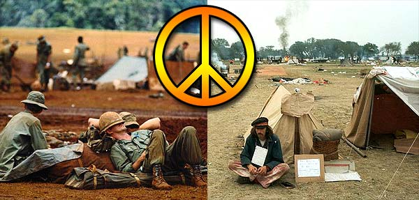

TPE Terminale L 2003/2004
Par Olivier Duclos et Killian Sahuc
Thème : Art, littérature et politique

Problématique : comment l'opposition à la guerre du Vietnam s'exprime-t-elle au travers de l'art et de la littérature ?